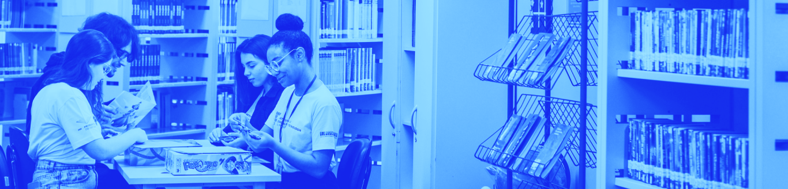

Biblioteca de Recursos
Agora, você terá a oportunidade de acessar uma Biblioteca de Materiais Complementares para aprofundamento nos conteúdos específicos trazidos nesta Unidade, com livros, textos e artigos relacionados aos temas trabalhados. Este recurso está disposto em forma de estante virtual, com botões interativos que darão acesso aos diferentes materiais propostos. Aproveite!

Josiane Carolina Soares Ramos Amaral
#Educação
#Gestão Democrática
#Rede Estadual
Lucia Camini
#Ensino Público
#Gestão Democrática
#Política Educacional
Taís Schmitz
#Participação
#Gestão Democrática
#Legislação do Ensino
Paulo Freire
#Ensinar
#Autonomia
#Participação
Pedagogia da Indignação: cartas pedagógicas e outros escritos
Paulo Freire
#Participação
#Gestão Democrática
#Legislação do Ensino
Planejamento Participativo: elementos para o debate em questão
Egeslaine de Nez e Warley Carlos de Souza
#Didática
#Planejamento participativo
#Projeto político pedagógico.
Dinora Tereza Zucchetti, Gabriel Grabowski e Joice Maria Lamb
#Educação Básica
#Educação Pública
#Gestão Democrática
#Participação
A Avaliação Institucional Participativa E Os Espaços Políticos De Participação Construídos, Reinventados, Conquistados Na Escola